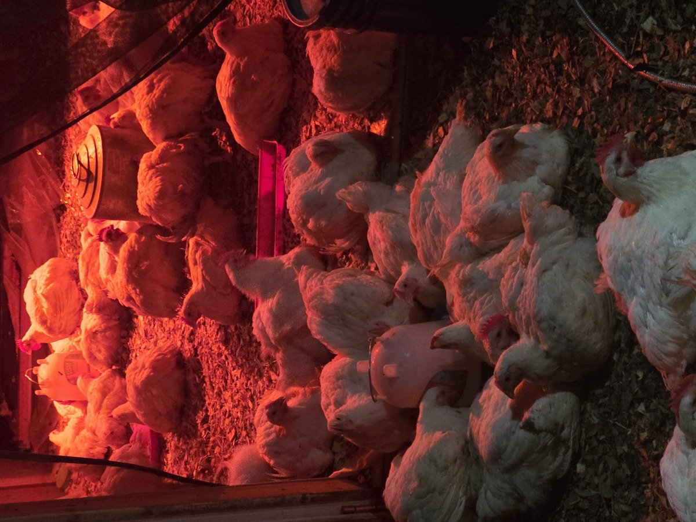
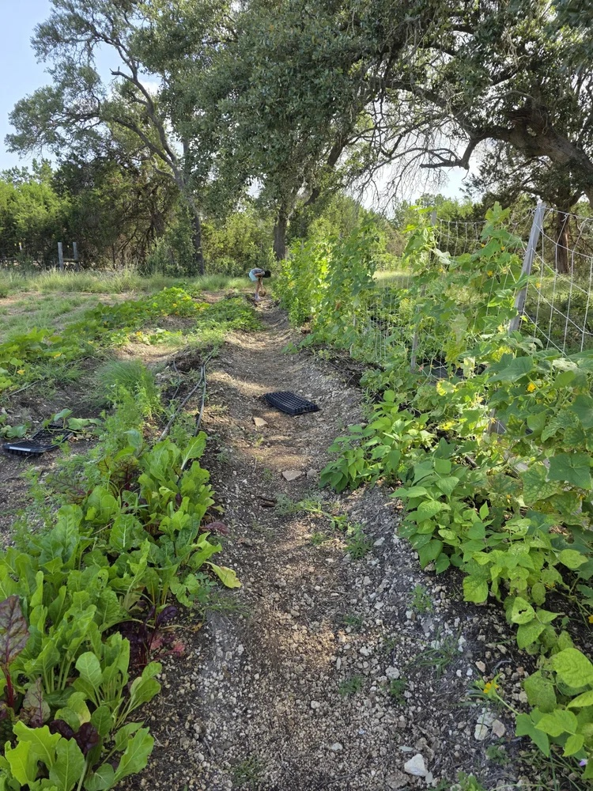

Our Story
It wasn't that
I hit rock bottom.
More like God sent a storm to deliver me out of one. I was unemployed, going through a transition in life, had a little savings, and a lot of time on my hands. So I started by planting any and everything in my small backyard. Nothing fancy, nothing planned on a whiteboard. Just soil, seed, and something in me that needed to grow something real.
One garden became a few crop rows. A few crop rows became a farm. I still can't fully explain how we got here, except that we just kept going.
Heart of Texas Organics is what happens when you stop waiting for the perfect moment and just start.
This didn't start as a business plan. It started as a calling. And it still is.
Read the Full Story